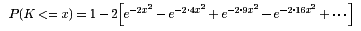

The Kolmogorov Distribution
JavaScript
The Kolmogorov distribution has distribution function

For a sample of size n from a continuous distribution function F(x),
K(x) is the limiting distribution of √n
supx|Fn(x)-F(x)|, where Fn(x) is the
sample distribution function.
For the two-sample problem with a sample of size m from F(x) and a sample
of size n from G(x),
K(x) is also the limiting distribution of
√((m+n)/mn) supx|Fm(x)-Gn(x)| under
the null hypothesis H0: F=G.
For example, K(1) = 0.73. The computation is accurate to .000005.